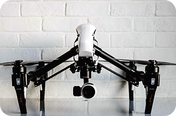

ギャラリー
-
 -

-

特長

自動操縦が可能で、短時間で大量の農作物を監視、収穫、播種、散布などの作業ができます。
高精度のカメラやセンサーを搭載しており、正確な土壌・作物の情報を収集でき、水や肥料などの資源を適切に配分できます。

必要な場所にだけ肥料や農薬を散布することができます。これにより、農薬や肥料の過剰使用が抑えられ、環境負荷やコスト削減に繋がります。
メーカー希望小売価格
¥550,000（税込）
スペック
機体
| ドローン名 | アグリ・ファルコン |
|---|---|
| 製品番号 | AGF-100 |
| 飛行時間 | 60 分 |
| 最大積載量 | 5 kg |
| 操作距離 | 3 km |
| 機体重量 | 8 kg |
| 機体寸法 | 150 x 150 x 40 cm |
| 機能・特徴 | 自動操縦、植物生育モニタリング、農薬散布 |